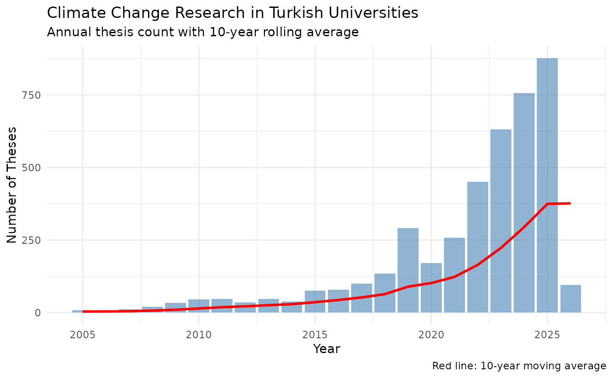
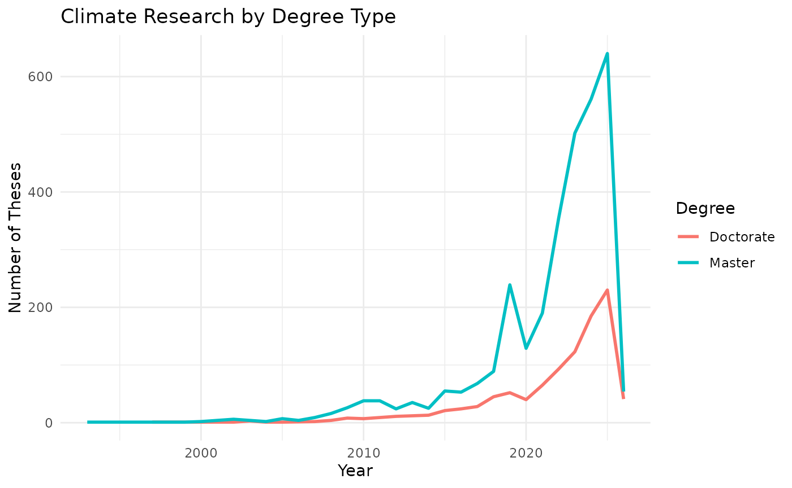
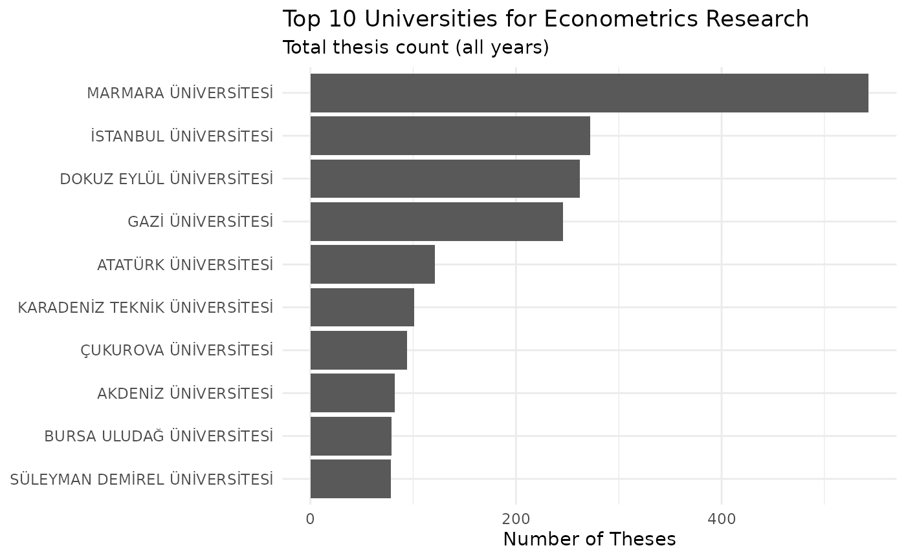
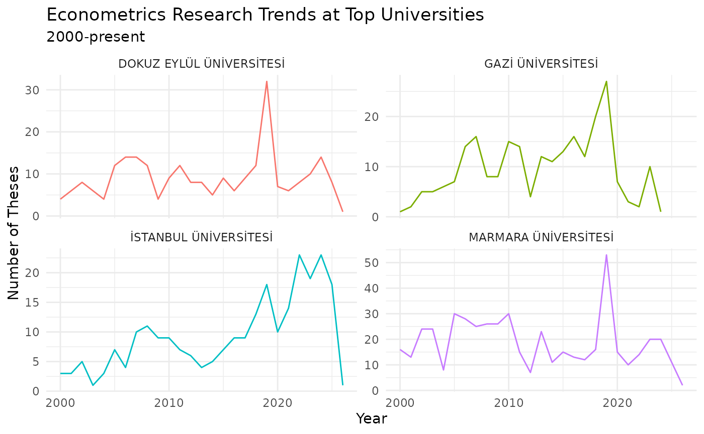
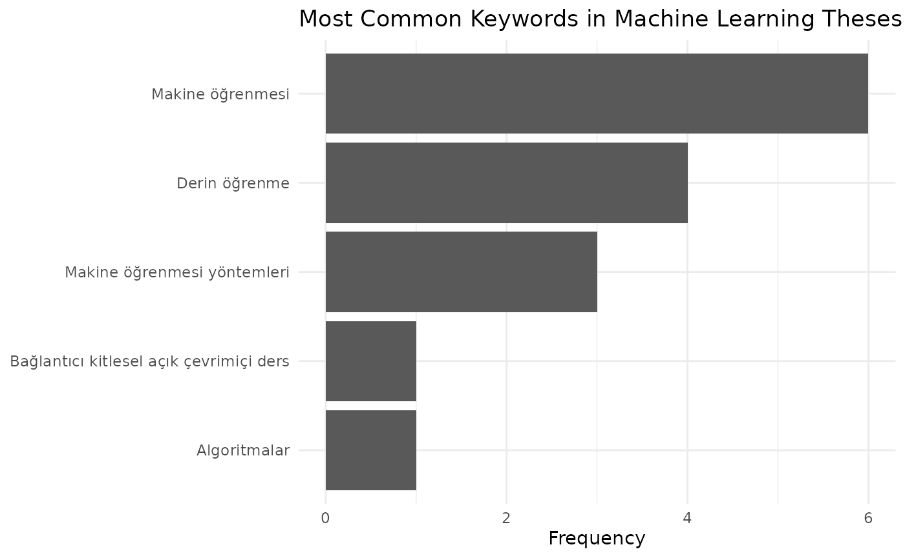

This vignette demonstrates three very simple analysis workflows using thesis metadata from the NTC. Each example starts with data collection and ends with a table or plot. The workflows cover research trends, institutional comparisons, and keyword mining.
Prerequisites: Familiarity with dplyr and ggplot2. See the Getting Started vignette for search function details.
library(tezr)
library(dplyr)
library(ggplot2)
library(tidyr)
library(stringr)
rolling_mean_right <- function(x, k) {
vapply(seq_along(x), function(i) {
if (i < k) {
return(NA_real_)
}
mean(x[(i - k + 1):i])
}, numeric(1))
}Example 1: Research Trends Over Time
Suppose you want to track how interest in a topic has changed across decades. This is a standard starting point for bibliometric analysis. You can replace the search term with your own topic of interest.
Collecting Data
Let’s use search_advanced() with the
search_field parameter set to all. The result is a tibble
of matching records with year, author, university, and other
metadata.
# Search for "iklim değişikliği" (climate change) in thesis titles
climate <- search_advanced(keyword = "iklim değişikliği",
search_field = "all",
max_search_results = Inf)
glimpse(climate)
#> Rows: 4,233
#> Columns: 13
#> $ thesis_no <chr> "127833", "211146", "160151", "143999", "64…
#> $ title_original <chr> "Küresel ısınma Avrupa Birliği ve Türkyie",…
#> $ title_translation <chr> "Global warming European Union and Turkey",…
#> $ author <chr> "FİKRET MAZI", "PINAR BAL", "AYŞE KAYA DÜND…
#> $ university <chr> "ANKARA ÜNİVERSİTESİ", "MARMARA ÜNİVERSİTES…
#> $ year <int> 2003, 2007, 2005, 2004, 1997, 2008, 2008, 2…
#> $ thesis_type_tr <chr> "Doktora", "Doktora", "Yüksek Lisans", "Yük…
#> $ thesis_type_en <chr> "Doctorate", "Doctorate", "Master", "Master…
#> $ language_tr <chr> "Türkçe", "İngilizce", "Türkçe", "Türkçe", …
#> $ language_en <chr> "Turkish", "English", "Turkish", "Turkish",…
#> $ subject_tr <chr> "Kamu Yönetimi", "Uluslararası İlişkiler", …
#> $ subject_en <chr> "Public Administration", "International Rel…
#> $ detail_id <chr> "0urt544xEr8UdoqaY8b6Hw", "uY6beSruWeTBJHDZ…Yearly Counts with Rolling Average
Let’s count theses per year and smooth with a 10-year rolling
average. The rolling average reveals sustained growth versus one-off
spikes. We can adjust k for a wider or narrower window.
# Count theses per year
yearly_counts <- climate |>
count(year) |>
arrange(year) |>
mutate(
year_numeric = as.numeric(year),
# 10-year rolling average to smooth yearly variation
rolling_avg = rolling_mean_right(n, k = 10)
)
# Bar chart with rolling average overlay
yearly_counts |>
na.omit() |>
ggplot(aes(x = year_numeric)) +
geom_col(aes(y = n), fill = "steelblue", alpha = 0.6) +
geom_line(aes(y = rolling_avg), color = "red", linewidth = 1) +
labs(
title = "Climate Change Research in Turkish Universities",
subtitle = "Annual thesis count with 10-year rolling average",
x = "Year",
y = "Number of Theses",
caption = "Red line: 10-year moving average"
) +
theme_minimal(base_size = 11)
Master’s vs PhD Trends
We can split by degree type to see what drives growth. Filter to the two main types for a readable plot.
# Compare master's and PhD thesis counts over time
type_trends <- climate |>
filter(thesis_type_en %in% c("Master", "Doctorate")) |>
count(year, thesis_type_en) |>
mutate(year = as.numeric(year))
type_trends |>
ggplot(aes(x = year, y = n, color = thesis_type_en)) +
geom_line(linewidth = 1) +
labs(
title = "Climate Research by Degree Type",
x = "Year",
y = "Number of Theses",
color = "Degree"
) +
theme_minimal(base_size = 11)
Example 2: Comparing Universities
Suppose we want to identify which universities produce the most
research in a given field. You can replace "Ekonometri"
with any subject from list_subjects().
Collecting University-Level Data
# All econometrics theses, counted by university
econ_theses <- search_detailed(subject = "Ekonometri",
max_search_results = Inf)
uni_counts <- econ_theses |>
count(university, sort = TRUE)
uni_counts |>
head(10)
#> # A tibble: 10 × 2
#> university n
#> <chr> <int>
#> 1 MARMARA ÜNİVERSİTESİ 543
#> 2 İSTANBUL ÜNİVERSİTESİ 272
#> 3 DOKUZ EYLÜL ÜNİVERSİTESİ 262
#> 4 GAZİ ÜNİVERSİTESİ 246
#> 5 ATATÜRK ÜNİVERSİTESİ 121
#> 6 KARADENİZ TEKNİK ÜNİVERSİTESİ 101
#> 7 ÇUKUROVA ÜNİVERSİTESİ 94
#> 8 AKDENİZ ÜNİVERSİTESİ 82
#> 9 BURSA ULUDAĞ ÜNİVERSİTESİ 79
#> 10 SÜLEYMAN DEMİREL ÜNİVERSİTESİ 78Top Universities Bar Chart
Let’s create a simple bar chart. Horizontal bars make long Turkish university names easy to read.
uni_counts |>
head(10) |>
ggplot(aes(x = n, y = reorder(university, n))) +
geom_col() +
labs(
title = "Top 10 Universities for Econometrics Research",
subtitle = "Total thesis count (all years)",
x = "Number of Theses",
y = NULL
) +
theme_minimal(base_size = 11)
University Trends Over Time
Let’s compare the top four universities from 2000 onward.
top4_unis <- uni_counts$university[1:4]
# Filter to top 4 universities, 2000 onward
uni_trends <- econ_theses |>
filter(university %in% top4_unis) |>
mutate(year = as.numeric(year)) |>
filter(year >= 2000) |>
count(year, university)
uni_trends |>
ggplot(aes(x = year, y = n, color = university)) +
geom_line() +
labs(
title = "Econometrics Research Trends at Top Universities",
subtitle = "2000-present",
x = "Year",
y = "Number of Theses",
color = "University"
) +
facet_wrap(~university, scales = "free_y") +
theme_minimal(base_size = 11) +
theme(legend.position = "none")
PhD-to-Total Ratio
Let’s assume a higher PhD ratio suggests a more research-intensive program.
# Compute PhD share at each top university
top_unis <- uni_counts$university[1:10]
degree_comparison <- econ_theses |>
filter(university %in% top_unis) |>
filter(thesis_type_en %in% c("Master", "Doctorate")) |>
count(university, thesis_type_en) |>
pivot_wider(names_from = thesis_type_en, values_from = n, values_fill = 0) |>
mutate(phd_ratio = Doctorate / (Doctorate + Master)) |>
arrange(desc(phd_ratio))
degree_comparison
#> # A tibble: 10 × 4
#> university Doctorate Master phd_ratio
#> <chr> <int> <int> <dbl>
#> 1 İSTANBUL ÜNİVERSİTESİ 117 155 0.430
#> 2 ATATÜRK ÜNİVERSİTESİ 50 71 0.413
#> 3 AKDENİZ ÜNİVERSİTESİ 31 51 0.378
#> 4 BURSA ULUDAĞ ÜNİVERSİTESİ 28 51 0.354
#> 5 KARADENİZ TEKNİK ÜNİVERSİTESİ 33 68 0.327
#> 6 GAZİ ÜNİVERSİTESİ 70 176 0.285
#> 7 DOKUZ EYLÜL ÜNİVERSİTESİ 65 197 0.248
#> 8 ÇUKUROVA ÜNİVERSİTESİ 23 71 0.245
#> 9 MARMARA ÜNİVERSİTESİ 121 422 0.223
#> 10 SÜLEYMAN DEMİREL ÜNİVERSİTESİ 14 64 0.179Example 3: Keyword and Abstract Analysis
You can extract research themes from thesis abstracts and keywords.
Detail records include keywords_tr,
keywords_en, abstract_original, and
abstract_translation. This example fetches details for all
matching theses, so it is slow.
Collecting Detailed Metadata
# Search for machine learning theses
ml_search <- search_basic("makine öğrenmesi",
max_search_results = Inf)
# Fetch full details (abstracts, keywords, advisor, PDF URLs)
ml_search_sample <- ml_search |>
slice_sample(n = 20)
ml_details <- detail(ml_search_sample$detail_id)Keyword Frequency
The keywords_tr field contains semicolon separated
terms. Let’s split them, trim whitespace, and count.
# Parse comma-separated keywords into individual rows
keywords <- ml_details |>
filter(!is.na(keywords_tr)) |>
select(thesis_no, keywords_tr) |>
mutate(keywords_tr = str_split(keywords_tr, ";")) |>
unnest(keywords_tr) |>
mutate(keyword = str_trim(keywords_tr)) |>
filter(keyword != "")
# Top 5 keywords
keyword_freq <- keywords |>
count(keyword, sort = TRUE) |>
head(5)
keyword_freq |>
ggplot(aes(x = n, y = reorder(keyword, n))) +
geom_col() +
labs(
title = "Most Common Keywords in Machine Learning Theses",
x = "Frequency",
y = NULL
) +
theme_minimal(base_size = 11)
Tips for Large-Scale Analysis
Saving Results Locally
Save search results to disk after the first fetch. Load them in later sessions to skip network calls. RDS preserves column types and CSV is useful for sharing.
Incremental Detail Retrieval
For large result sets, fetch details in batches and save each batch. This protects against interruptions — if the process stops, you only lose the current batch.
batch_size <- 50
all_results <- search_basic("panel data")
for (i in seq(1, nrow(all_results), by = batch_size)) {
batch_end <- min(i + batch_size - 1, nrow(all_results))
batch <- all_results[i:batch_end, ]
# detail() uses built-in rate limiting
details <- detail(batch$detail_id)
# Save each batch to disk
saveRDS(details, paste0("details_batch_", i, ".rds"))
# Optional short pause between batches
Sys.sleep(2)
}Rate Limiting
tezr uses a built-in 2-second rate limit for request setup.
detail() fetches uncached records in parallel (up to 5
active requests), and large jobs can still take time. Process in batches
and cache results when possible.